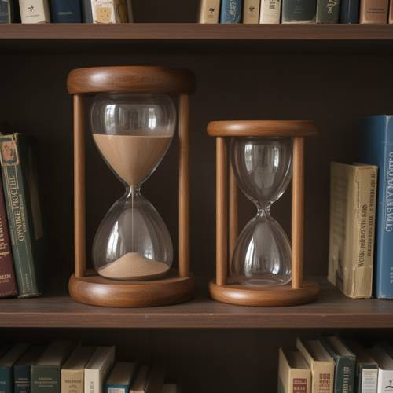
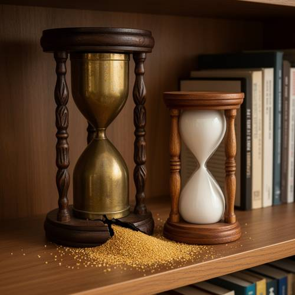
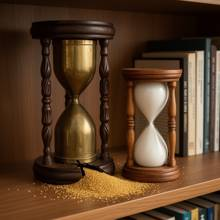
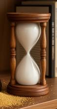

Logical Reasoning — There are two hourglasses on the bookshelf. The larger hourglass on th
There are two hourglasses on the bookshelf. The larger hourglass on the left has all the sand leaked out, but the smaller hourglass on the right has no sand. They are not made of glass.

Direct — one call, no iteration

Continuum — Kimi K3 + FLUX.2-dev
Judge — Direct
FAILLogical Reasoning — The larger hourglass on the left has not fully leaked its sand; there is still a substantial amount of sand in the top bulb, and sand is actively falling to the bottom. The smaller hourglass on the right correctly has no sand. Because the state of the larger hourglass contradicts the prompt, this checkpoint is not met.
PASSRelationship - Composition — The image displays two hourglasses resting side-by-side on a wooden shelf, which is part of a larger bookshelf structure filled with books.
PASSWorld Knowledge — The image correctly depicts two hourglasses, which are time-measuring instruments, and a bookshelf used for storing books.
PASSRelationship - Comparison — The image shows two hourglasses. The one on the left is noticeably larger in both height and volume than the one positioned on its right.
FAILGrammar - Negation — The prompt specifies the hourglasses are 'not made of glass' and the smaller one has 'no sand'. In the image, the bulbs of the hourglasses are visibly made of transparent glass, contradicting the first negation. Although the smaller hourglass correctly has no sand, the first negative condition is not met.
Judge — Continuum
PASSLogical Reasoning — The image accurately depicts the logical conditions: a larger hourglass on the left is shown with its base broken and its sand spilled out onto the shelf, while the smaller hourglass on the right is opaque and appears empty, consistent with having no sand.
PASSRelationship - Composition — The image shows two hourglasses positioned on a wooden shelf. The presence of books behind and below the hourglasses indicates that they are on a bookshelf.
PASSWorld Knowledge — The objects in the image are clearly recognizable as hourglasses, and the setting is identifiable as a bookshelf.
PASSRelationship - Comparison — The image presents two hourglasses, with the one on the left being noticeably taller and wider than the one on the right, fulfilling the comparative relationship.
PASSGrammar - Negation — The image adheres to the negations. The main body of the left hourglass is made of a gold-colored metal, not glass. The main body of the right hourglass is made of an opaque white material, not transparent glass. The right hourglass does not contain any visible sand.
What the agent did
Thinking
We need respond to image generation prompt. Need generate then inspect, edit, mark best. User asks odd description. Need create image two hourglasses on bookshelf, larger left has all sand leaked out but smaller right has no sand. Not made glass. Need interpret. "larger hourglass on left has all the sand leaked out" Could mean sand all outside/leaked from chamber onto shelf, likely hourglass has no sand because leaked out? "smaller ... has no sand" means absent sand but perhaps intact empty. Distinction visually: larger has spilled sand pile around/base, smaller empty. Not made of glass—could use wood, ceramic, metal, maybe paper/stone. Need ensure bookshelf. Need likely generate. Use flux2-dev exactly. No seed. Prompt detailed. Let's generate perhaps 1024x768? Harness fixed image size? User no dimensions, default 1024 square. They said sizes controlled by harness, perhaps only omit seeds. We can use width/height? Policy says image size fixed for comparison, so likely default. Generate with 1024. Need visual detail. Two hourglasses, left larger. Perhaps rustic carved wooden and ceramic vessels? An hourglass not glass can still have wooden bulbs/containers. We can make frames stone or dark carved wood. Larger left has golden sand leaked through crack into pile on shelf, both chambers empty. Smaller right completely dry, empty, clean, no leakage. On bookshelf. Need maybe avoid transparent glass. Prompt could say wooden hourglass bodies, opaque, no glass. "left one visibly cracked and a mound..." Need make sure larger left, smaller right. Let's generate.
Step 1 — `generate_image`
{
"model": "flux2-dev",
"prompt": "A realistic still life on a wooden bookshelf with two opaque, non-glass hourglasses side by side. The larger hourglass on the left is made of dark carved wood and aged brass; both chambers are empty because a crack near its base has leaked all of its golden sand onto the shelf in a conspicuous scattered pile. The smaller hourglass on the right is made of pale ceramic and wood, intact, completely empty with no sand anywhere around it. Books line the shelf behind them, warm ambient light, clear size contrast, precise composition."
}
Result img_0

Thinking
We need inspect. Image seems excellent except right appears perhaps white opaque, but lower chamber has some dark line maybe sand? Actually right hourglass white ceramic with a darker curved line due shading, perhaps empty. Left all sand leaked out, brass opaque. Larger left, smaller right. "not made of glass" clear. Left has maybe all sand outside. Need mark best. But perhaps need inspect right crop to ensure no sand. We can use inspect_region text description maybe "the smaller hourglass". Need determine if internal shading could look like sand. Crop.
Step 2 — `inspect_region`
{
"image": "img_0",
"roi": "the smaller hourglass on the right",
"padding": 0.15,
"min_size": 350
}
Result img_1

Thinking
Interesting crop shows sand near bottom left, but that's leaked from larger, some grains spread close to smaller. User says smaller has no sand perhaps should no sand inside, but maybe "no sand" could imply no sand in it. Yet request might mean larger has all sand leaked out, smaller no sand (perhaps from outset). Visually small one looks like white opaque chambers and empty. Some leaked grains at foot from larger. Might be okay. Need mark img_0. Good enough stop. But user said "larger hourglass on the left has all the sand leaked out" image indeed all internal chambers empty but due opaque impossible to know. Spill communicates. "not made of glass" yes. Could maybe ensure no sand grains touching small? Minor. User likely expects generated image, not necessarily iterative perfection. Mark best.
Step 3 — `mark_best`
{
"image": "img_0",
"reason": "Clearly shows two opaque, non-glass hourglasses on a bookshelf, with the larger left one cracked and emptied onto the shelf while the smaller right one remains intact and empty."
}
Thinking
Need final concise perhaps say image generated. Since tool output visible likely. No need describe too much. Ensure no further edit after mark.
Model
Created the image with both non-glass hourglasses, the larger one emptied onto the bookshelf and the smaller one remaining intact and empty.